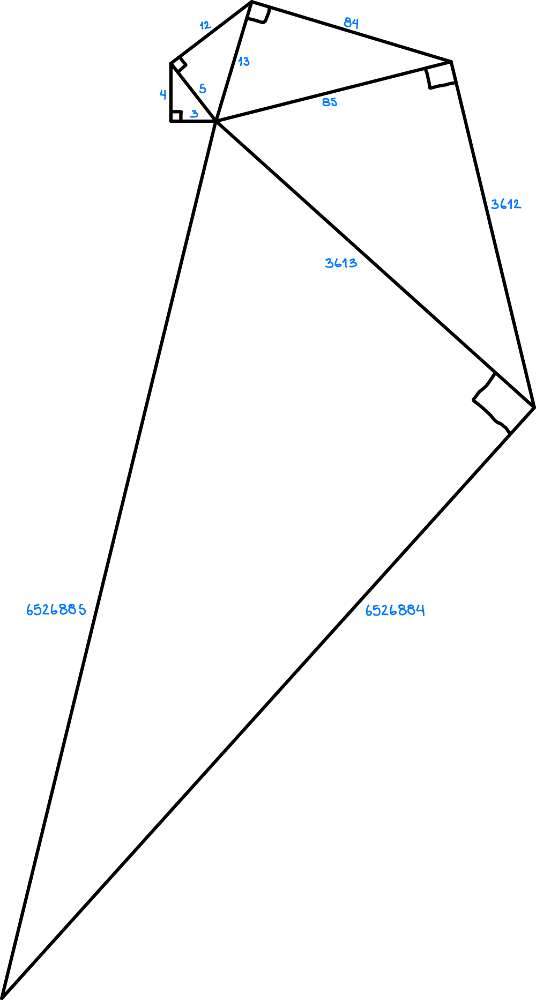

Por Manuel Lopera
Fundamentos de Matemáticas Discretas
Prof. David Blazquez Sanz
Universidad Nacional de Colombia Sede Medellín
2024-2
Una terna pitagórica es un conjunto de tres números naturales que
cumplen con la relación \(a^2 + b^2 = c^2\). Los números \(a\), \(b\)
son las longitudes de los catetos y \(c\) es la longitud de la
hipotenusa en un triángulo rectángulo.
Las ternas cuyos tres números \(a\), \(b\) y \(c\) son primos
relativos, es decir, cuyo máximo común divisor es 1, son denominadas
ternas pitagóricas primitivas. Las ternas no primitivas son aquellas
donde sus términos son múltiplos de una terna primitiva y no son de
interés en esta ocasión.
Veamos la relación donde el elemento \(c\) (la hipotenusa) de una
terna es igual al elemento \(a\) (el primer cateto) de otra terna. Sea
\(X\) el conjunto de ternas pitagóricas primitivas
y \(R \subseteq X \times X \) una relación sobre \(X\) definida por
\((a, b, c) \space R \space (d, e, f)\) si \(c = d\)
A continuación, seleccione el número de ternas pitagóricas que desea
generar usando el control deslizable. El máximo esta limitado a 11 ya
que los valores de las ternas bajo esta relación crecen muy rápido y
sobrepasan el máximo entero soportado en JavaScript, el cual es
\(2^{53} - 1\).
Las ternas generadas se muestran en la siguiente tabla:
#
a
b
c
Tabla 1. Primeras ternas
pitagóricas que cumplen la relación \(R\).
Para entender mejor la relación propuesta veamos la siguiente imagen.
En ella se observa como la hipotenusa de cada triángulo rectángulo es
igual al primer cateto del siguiente (note que la imagen no está a
escala).

Imagen 1. Triángulos de ternas pitagóricas bajo la relación \(R\).
Notemos que \(R\):
No es reflexiva, esto es, no se cumple \((a, b, c) \space R \space (a,
b, c)\)
No es simétrica, esto es, \(((a, b, c), (c, d, e)) \in R\) pero \(((c,
d, e), (a, b, c)) \notin R\)
No es transitiva, esto es, \(((a, b, c), (c, d, e)) \in R\) y \(((c,
d, e), (e, f, g)) \in R\) pero \(((a, b, c), (e, f, g)) \notin R\)
Es antisimétrica, esto es, \(((a, b, c), (c, d, e)) \in R\) y \(((c,
d, e), (a, b, c)) \notin R\) para todo \((a, b, c) \neq (c, d, e)\)
Por último, se muestra el árbol formado por estas primeras
ternas pitagóricas relacionadas mediante \(R\).
Imagen 2. Árbol de ternas pitagóricas bajo la relación \(R\).
Algoritmo
Inicialmente, intenté implementar un algoritmo que usara una de las
formas de generación de ternas pitagóricas
más común
que se encuentra en la Web. Tomando dos números naturales \(m\) y
\(n\) tales que \(n > m\), se puede generar una terna pitagórica \((a,
b, c)\) de la siguiente manera:
\((a, b, c) = (n^2 - m^2, 2mn, m^2 + n^2)\)
El rendimiento de este primer intento fue muy pobre, mediante un ciclo
se va incrementando \(m\) y \(n\) en una unidad mientras se verifica
una a una si la nueva terna generada cumple la relación \(R\) con la
última terna válida encontrada. Como es de esperarse, cuando se
encuentra la terna 6 ya los números son tan grandes y tan espaciados
entre si, que hallar la terna 7 se hace practicamente imposible en una
computadora normal.
Por lo tanto, decidí investigar un poco más y encontré un método de
generación
(Fallas, pp. 16-17)
exactamente para los tipos de ternas que la relación \(R\) necesita.
Posiblemente ya notamos que todas las termas son de la forma
\((a,b,b+1) \text{ con } b > a\)
El método genera ternas para cualquier \(n \in \mathbb{N}\) de la
siguiente manera:
y hallar \(n\) para generar la siguiente terna es fácil simplemente
igualando en la terna actual \(c = 2n + 1\), esto nos permite evitar
ciclos innecesarios y generar directamente la siguiente terna
requerida, lo cual es bastante eficiente y solo se ve limitado por el
máximo número entero soportado por JavaScript.
Si desea revisar el código fuente completo, puede visitar el siguiente
repositorio. Los métodos que generan las ternas se encuentran en el archivo
js/main.js
y pueden identificarse como generate_triplets_v1 y
generate_triplets_v2 respectivamente.
Fallas Juan José. Ternas pitagóricas: métodos para generarlas y
algunas curiosidades. Revista Digital: Matemática, Educación e
Internet [en linea]. 2009, 9(2), 1-21[fecha de Consulta 6 de Marzo
de 2025]. ISSN: 1659-0643. Disponible en:
https://www.redalyc.org/articulo.oa?id=607972920002